The function plots the POMDP policy graph for converged POMDP solution and the policy tree for a finite-horizon solution.
Usage
plot_policy_graph(
x,
belief = NULL,
engine = c("igraph", "visNetwork"),
show_belief = TRUE,
state_col = NULL,
legend = TRUE,
simplify_observations = TRUE,
remove_unreachable_nodes = TRUE,
...
)
curve_multiple_directed(graph, start = 0.3)Arguments
- x
object of class POMDP containing a solved and converged POMDP problem.
- belief
the initial belief is used to mark the initial belief state in the graph of a converged solution and to identify the root node in a policy graph for a finite-horizon solution. If
NULLthen the belief is taken from the model definition.- engine
The plotting engine to be used.
- show_belief
logical; show estimated belief proportions as a pie chart or color in each node?
- state_col
colors used to represent the belief over states in each node. Only used if
show_beliefisTRUE.- legend
logical; display a legend for colors used belief proportions?
- simplify_observations
combine parallel observation arcs into a single arc.
- remove_unreachable_nodes
logical; remove nodes that are not reachable from the start state? Currently only implemented for policy trees for unconverged finite-time horizon POMDPs.
- ...
parameters are passed on to
policy_graph(),estimate_belief_for_nodes()and the functions they use. Also, plotting options are passed on to the plotting engineigraph::plot.igraph()orvisNetwork::visIgraph().- graph
The input graph.
- start
The curvature at the two extreme edges.
Details
The policy graph returned by policy_graph() can be directly plotted. plot_policy_graph()
uses policy_graph() to get the policy graph and produces an
improved visualization (a legend, tree layout for finite-horizon solutions, better edge curving, etc.).
It also offers an interactive visualization using visNetwork::visIgraph().
Each policy graph node is represented by an alpha vector specifying a hyperplane segment. The convex hull of the set of hyperplanes represents the value function. The policy specifies for each node an optimal action which is printed together with the node ID inside the node. The arcs are labeled with observations. Infinite-horizon converged solutions form a single policy graph. For a finite-horizon solution, a policy tree is produced. The levels of the tree and the first number in the node label represent the epochs.
For better visualization, we provide a few features:
Show Belief, belief color and legend: A pie chart (or the color) in each node can be used represent an example of the belief that the agent has if it is in this node. This can help with interpreting the policy graph. The belief is obtained by calling
estimate_belief_for_nodes().Simplify observations: In some cases, two observations can lead to the same node resulting in two parallel edges. These edges can be collapsed into one labels with the observations.
Remove unreachable nodes: Many algorithms produce unused policy graph nodes which can be filtered to produce a smaller tree structure of actually used nodes. Non-converged policies depend on the initial belief and if an initial belief is specified, then different nodes will be filtered and the tree will look different.
These improvements can be disabled using parameters.
Auxiliary function
curve_multiple_directed() is a helper function for plotting igraph graphs similar to igraph::curve_multiple() but
it also adds curvature to parallel edges that point in opposite directions.
Examples
data("Tiger")
### Policy graphs for converged solutions
sol <- solve_POMDP(model = Tiger)
sol
#> POMDP, list - Tiger Problem
#> Discount factor: 0.75
#> Horizon: Inf epochs
#> Size: 2 states / 3 actions / 2 obs.
#> Start: uniform
#> Solved:
#> Method: ‘grid’
#> Solution converged: TRUE
#> # of alpha vectors: 5
#> Total expected reward: 1.933439
#>
#> List components: ‘name’, ‘discount’, ‘horizon’, ‘states’, ‘actions’,
#> ‘observations’, ‘transition_prob’, ‘observation_prob’, ‘reward’,
#> ‘start’, ‘info’, ‘solution’
policy_graph(sol)
#> IGRAPH c72a896 D--- 5 10 --
#> + attr: label (v/c), id (v/n), action (v/c), size (v/n), label (e/c),
#> | observation (e/c), arrow.size (e/n)
#> + edges from c72a896:
#> [1] 1->3 2->3 3->4 4->5 5->3 1->3 2->1 3->2 4->3 5->3
## visualization
plot_policy_graph(sol)
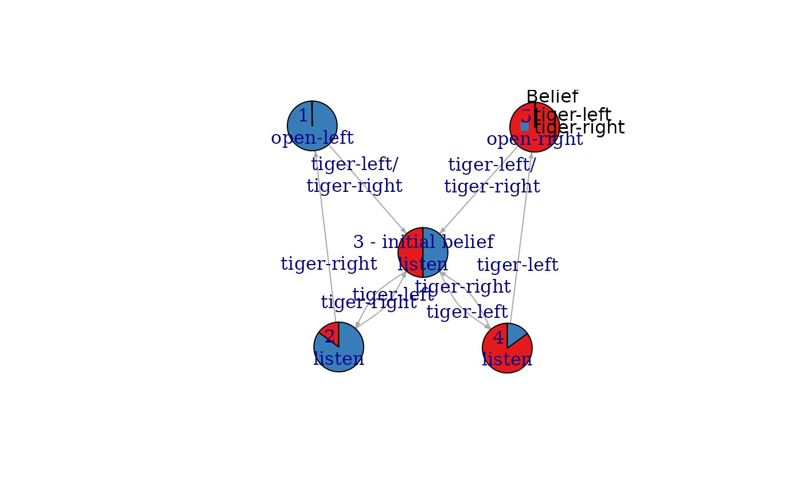
## use a different graph layout (circle and manual; needs igraph)
library("igraph")
#>
#> Attaching package: ‘igraph’
#> The following objects are masked from ‘package:stats’:
#>
#> decompose, spectrum
#> The following object is masked from ‘package:base’:
#>
#> union
plot_policy_graph(sol, layout = layout.circle)
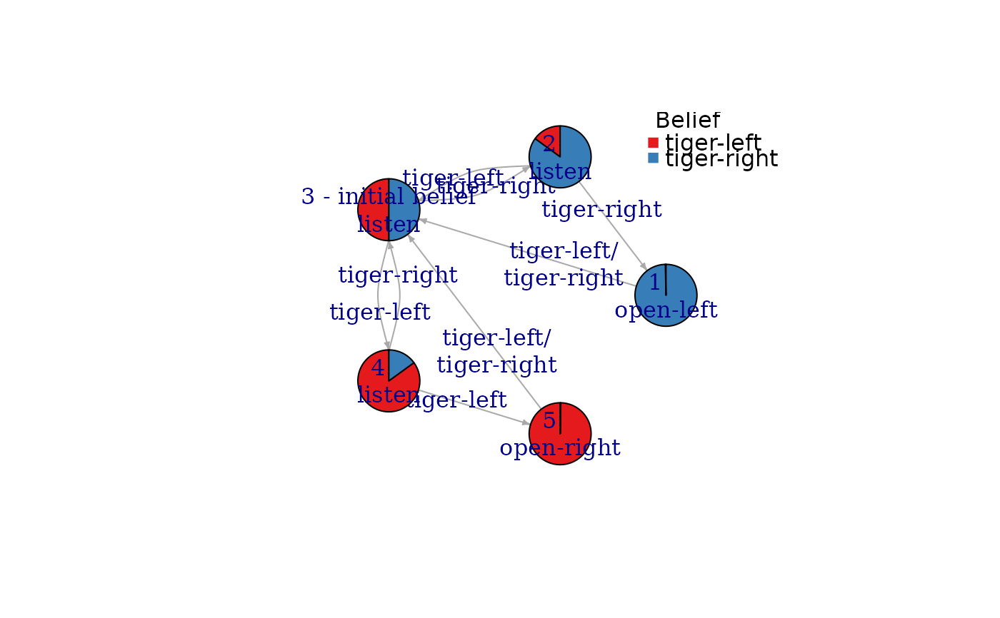
plot_policy_graph(sol, layout = rbind(c(1,1), c(1,-1), c(0,0), c(-1,-1), c(-1,1)), margin = .2)
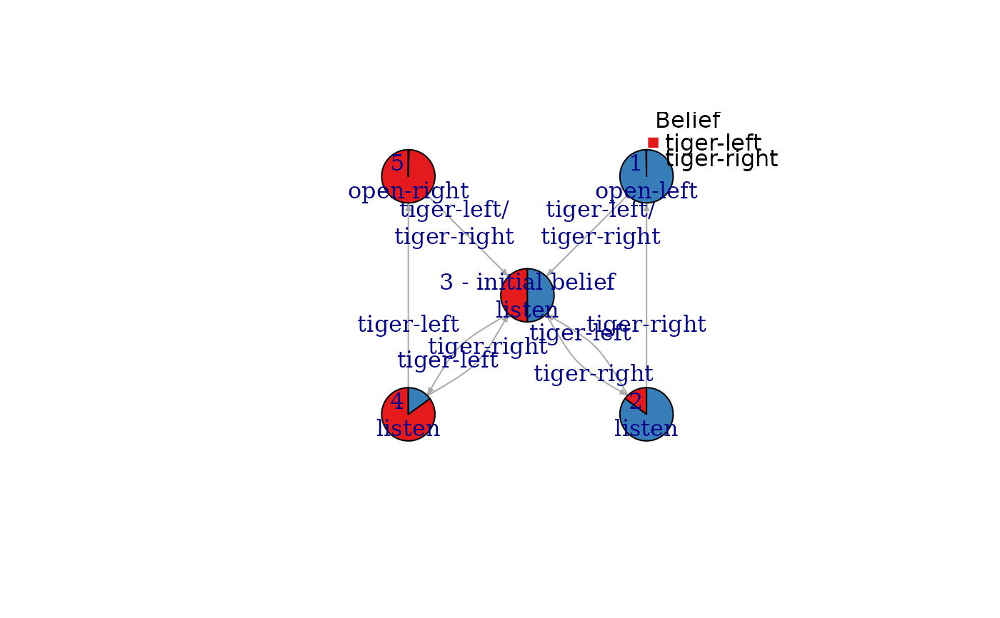
plot_policy_graph(sol,
layout = rbind(c(1,0), c(.5,0), c(0,0), c(-.5,0), c(-1,0)), rescale = FALSE,
vertex.size = 15, edge.curved = 2,
main = "Tiger Problem")
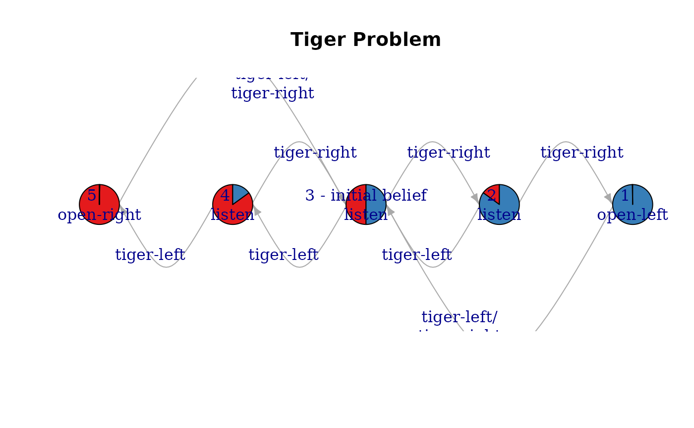
## hide labels, beliefs and legend
plot_policy_graph(sol, show_belief = FALSE, edge.label = NA, vertex.label = NA, legend = FALSE)
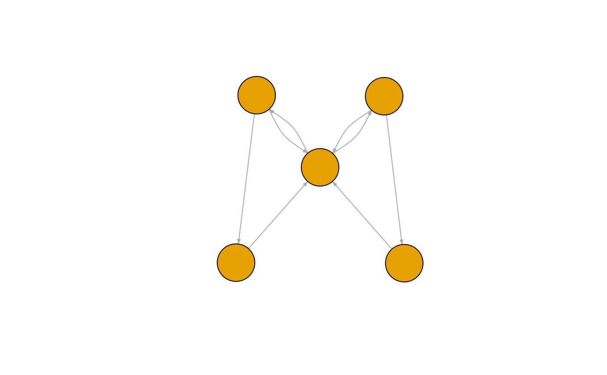
## custom larger vertex labels (A, B, ...)
plot_policy_graph(sol,
vertex.label = LETTERS[1:nrow(policy(sol))],
vertex.size = 60,
vertex.label.cex = 2,
edge.label.cex = .7,
vertex.label.color = "white")
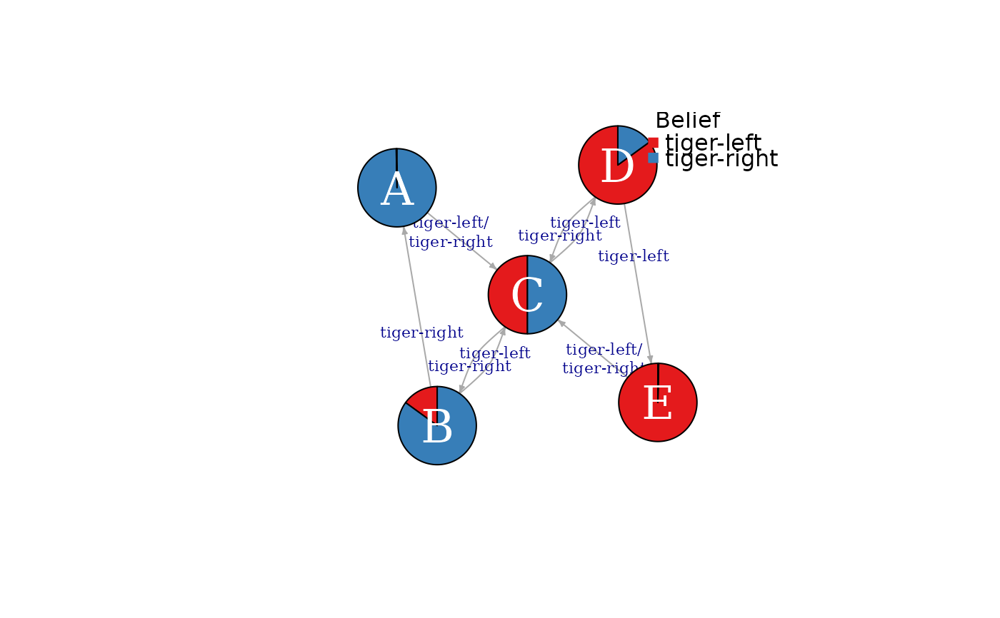
## plotting the igraph object directly
pg <- policy_graph(sol, show_belief = TRUE,
simplify_observations = TRUE, remove_unreachable_nodes = TRUE)
## (e.g., using a tree layout)
plot(pg, layout = layout_as_tree(pg, root = 3, mode = "out"))
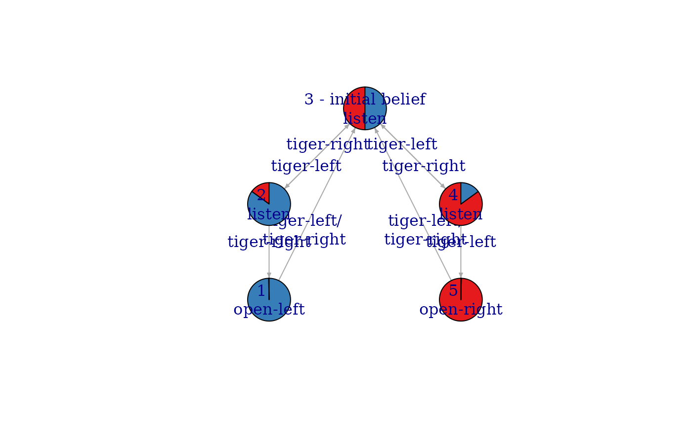
## change labels (abbreviate observations and use only actions to label the vertices)
plot(pg,
edge.label = abbreviate(E(pg)$label),
vertex.label = V(pg)$action,
vertex.size = 20)
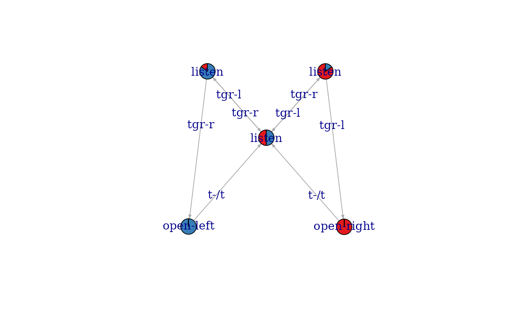
## use action to color vertices (requires a graph without a belief pie chart)
## and color edges to represent observations.
pg <- policy_graph(sol, show_belief = FALSE,
simplify_observations = TRUE, remove_unreachable_nodes = TRUE)
plot(pg,
vertex.label = NA,
vertex.color = factor(V(pg)$action),
vertex.size = 20,
edge.color = factor(E(pg)$observation),
edge.curved = .1
)
acts <- levels(factor(V(pg)$action))
legend("topright", legend = acts, title = "action",
col = igraph::categorical_pal(length(acts)), pch = 15)
obs <- levels(factor(E(pg)$observation))
legend("bottomright", legend = obs, title = "observation",
col = igraph::categorical_pal(length(obs)), lty = 1)
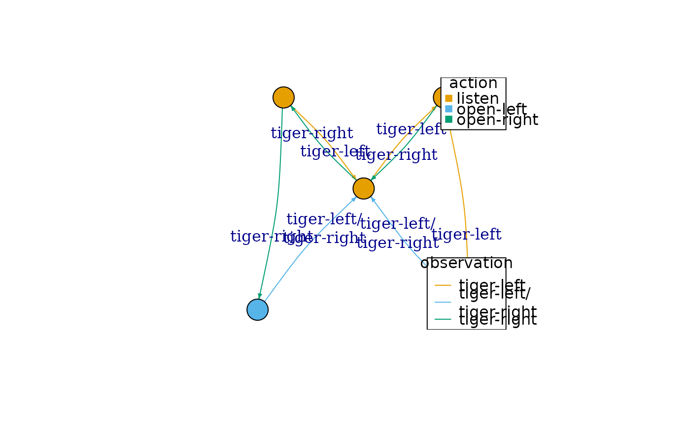
## plot interactive graphs using the visNetwork library.
## Note: the pie chart representation is not available, but colors are used instead.
plot_policy_graph(sol, engine = "visNetwork")
## add smooth edges and a layout (note, engine can be abbreviated)
plot_policy_graph(sol, engine = "visNetwork", layout = "layout_in_circle", smooth = TRUE)
### Policy trees for finite-horizon solutions
sol <- solve_POMDP(model = Tiger, horizon = 4, method = "incprune")
policy_graph(sol)
#> IGRAPH 2f38376 DN-- 26 46 --
#> + attr: layout (g/n), name (v/c), id (v/c), epoch (v/n), action (v/c),
#> | size (v/n), label (e/c), observation (e/c), arrow.size (e/n)
#> + edges from 2f38376 (vertex names):
#> [1] 1-1\nopen-left ->2-5\nlisten 1-2\nlisten ->2-5\nlisten
#> [3] 1-3\nlisten ->2-5\nlisten 1-4\nlisten ->2-6\nlisten
#> [5] 1-5\nlisten ->2-7\nlisten 1-6\nlisten ->2-7\nlisten
#> [7] 1-7\nlisten ->2-8\nlisten 1-8\nlisten ->2-9\nopen-right
#> [9] 1-9\nopen-right->2-5\nlisten 2-1\nopen-left ->3-3\nlisten
#> [11] 2-2\nlisten ->3-2\nlisten 2-3\nlisten ->3-3\nlisten
#> [13] 2-4\nlisten ->3-3\nlisten 2-5\nlisten ->3-4\nlisten
#> + ... omitted several edges
plot_policy_graph(sol)
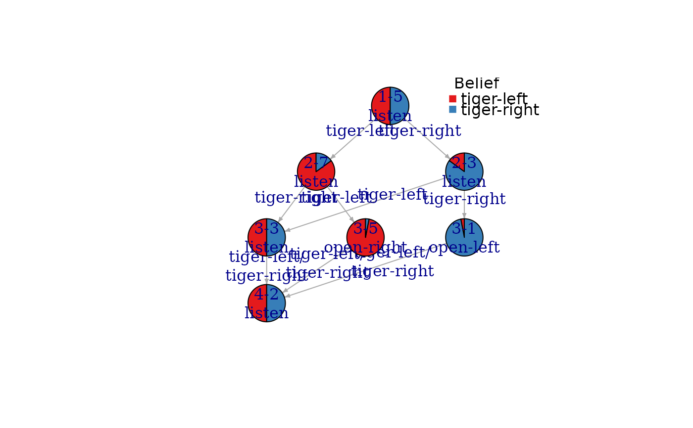
# Note: the first number in the node id is the epoch.
# plot the policy tree for an initial belief of 90% that the tiger is to the left
plot_policy_graph(sol, belief = c(0.9, 0.1))
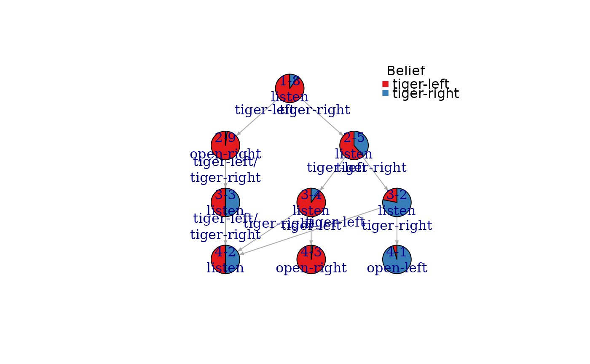
# Plotting a larger graph (see ? igraph.plotting for plotting options)
sol <- solve_POMDP(model = Tiger, horizon = 10, method = "incprune")
plot_policy_graph(sol, edge.arrow.size = .1,
vertex.label.cex = .5, edge.label.cex = .5)
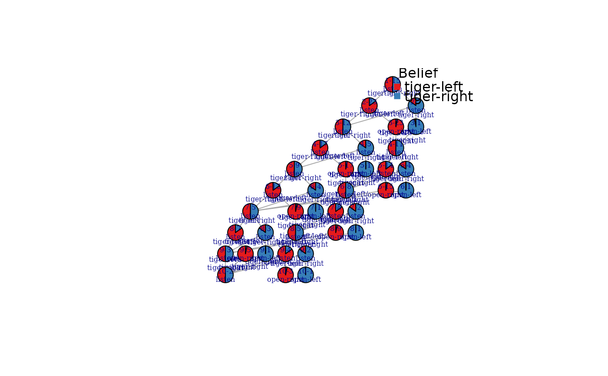
plot_policy_graph(sol, engine = "visNetwork")